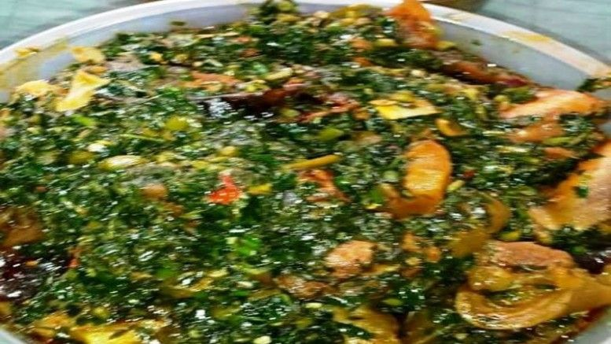

Vegetable

Ingredient
- 4-6 cups chicken, beef, or vegetable broth
- 1 can (11.5 oz) diced tomatoes
- 1 large diced potato
- 1 cup corn kernels
- Salt
- Pepper
- 4 tablespoons olive oil
Steps for cooking Vegetable soup
- wash the vegetables
- Dice the tomatoes
- Mince the garlic
- Measure out 1 cup of corn kernels
- Add salt, pepper, and any other seasonings you desire
- Serve and enjoy your delicious vegetable soup